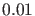
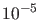
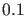
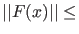
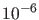
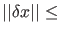
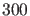

It is possible to specify various options for the continuation run. In the continuation we use the options structure which is initially created with contset:
options = contset;
will initialize the structure. The continuer stores the handle to the options in the variable
cds.options.
Options can then be set using
options = contset(options, optionname, optionvalue);
where optionname is an option from the following list:
- InitStepsize
- the initial stepsize (default: )
- MinStepsize
- the minimum stepsize to compute the next point on the curve (default: )
- MaxStepsize
- the maximum stepsize (default: )
- MaxCorrIters
- maximum number of correction iterations (default:
 )
)
- MaxNewtonIters
- maximum number of Newton-Raphson iterations before switching to Newton-Chords in the corrector iterations (default:
 )
)
- MaxTestIters
- maximum number of iterations to locate a zero of a testfunction (default: )
- Increment
- the increment to compute first order derivatives numerically (default: )
- MoorePenrose
- boolean indicating the use of the Moore-Penrose continuation as the Newton-like corrector procedure (default:
 )
)
- FunTolerance
- tolerance of function values:  FunTolerance is the first convergence criterium of the Newton iteration (default: )
- VarTolerance
- tolerance of coordinates:
 VarTolerance is the second convergence criterium of the Newton iteration (default: )
- TestTolerance
- tolerance of test functions (default: )
- Singularities
- boolean indicating the presence of a singularity matrix (default:
 )
)
- MaxNumPoints
- maximum number of points on the curve (default: )
- Backward
- boolean indicating the direction of the continuation (sign of the initial tangent vector)
 (default: )
(default: )
- CheckClosed
- number of points indicating when to start to check if the curve is closed (0 = do not check) (default:
 )
)
- Adapt
- number of points after which to call the adapt-function while computing the curve (default: =adapt always)
- IgnoreSingularity
- vector containing indices of singularities which are to be ignored (default: empty)
- Multipliers
- boolean indicating the computation of the multipliers (default: )
- Eigenvalues
- boolean indicating the computation of the eigenvalues (default: )
- TSearchOrder
- numerical value that indicates if unit vectors are cycled in increasing order of index (default: , increasing) or
decreasing (set to a value different from ), see §3.4.10.
- Userfunctions
- boolean indicating the presence of user functions (default: )
- UserfunctionsInfo
- is an array with structures containing information about the userfunctions. This structure has the following fields:
| .label |
label of the userfunction |
| .name |
name of this particular userfunction |
| .state |
boolean indicating whether the userfunction has to be evaluated or not |
- PRC
- variable indicating the computation of the phase response curve (default: empty)
- dPRC
- variable indicating the computation of the derivative of the phase response curve (default: empty)
- Input
- vector representing the input given to the system for the computation of the phase response curve (default: )
This list is stored in the file contidx.m in the directory Continuer.
However, options also contains fields which are not set by the user but frozen or filled by calls
to the curvefile, namely:
- SymDerivative
- the highest order symbolic derivative which is present (default: )
- SymDerivativeP
- the highest order symbolic derivative with respect to the free parameter(s) which is present (default: )
- Testfunctions
- boolean indicating the presence of test functions (default: )
- WorkSpace
- boolean indicating to initialize and clean up user variable space (default: )
- Locators
- boolean vector indicating the user has provided his own locator code to locate zeroes of test functions. Otherwise the default locator will be used (default: empty)
- ActiveParams
- vector containing indices of the active parameter(s) (default: empty)
- ActiveUParams
-
- ActiveSParams
-
- ActiveSParam
-
The last three fields are used only in the homotopy methods for the initialzation of connecting orbits.
Some more details follow now.